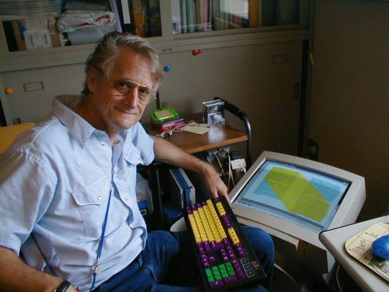
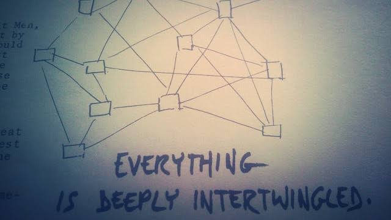

EL PROYECTO XANADU
XANADU
En 1965, el filósofo norteamericano Ted Nelson ideó un sistema que tuviera dentro de sí, un documento global y único que
cubra todo lo escrito en el mundo, de manera accesible y rápida, y donde la información fuera enlazada de forma libre y fluida.
Para ello, acuño los términos Hipertexto e Hipermedia, definidos por él como:
“Cuerpos de material escrito o gráfico interconectados de un modo complejo que no se puede
representar convenientemente en papel”.

Ted Nelson, Creador del Proyecto XANADU
Con el paso del tiempo, y momentos antes de la creación de Internet, el Hipertexto se definió como un enfoque para
manejar y organizar información, en el cual, los contenidos se almacenan en una red de datos conectados a través de vínculos.
Los datos contienen textos y diferentes tipos de multimedia, así como el código ejecutable para visualizar correctamente el contenido.
A pesar de que Xanadu nunca llegó a concretarse, la aportación de Nelson al definir el Hipertexto permitió que la lectura pudiera realizarse de forma no lineal, satisfaciendo la necesidad de poder interactuar con diversos tipos de información.
A pesar de que Xanadu nunca llegó a concretarse, la aportación de Nelson al definir el Hipertexto permitió que la lectura pudiera realizarse de forma no lineal, satisfaciendo la necesidad de poder interactuar con diversos tipos de información.

Uno de los esquemas creados por Ted Nelson sobre el Proyecto XANADU
Dos años más tarde, fundó el Proyecto Xanadu, el cual, tenía como propósito ser una red virtual que permitiría que la información
fuera almacenada no como archivos separados, sino como una literatura conectada, ofreciendo millones de documentos a millones de
usuarios en forma simultánea,
El proyecto de Nelson se inspiró el poema “Kubla Khan” de Samuel Taylor Coleridge, donde en una parte expresa:
“Este mágico sitio de la memoria literal donde nada se pierde nunca”.
TED NELSON
Ted nació en 1937 cerca de una aldea de Greenwich, Nueva York y fue el primero en acuñar el término Hipertexto en 1965. Su afición de coleccionar infinidad de objetos le condujo al mundo computacional. Obtuvo su licenciatura en Filosofía por la Universidad de Swarthmore en 1959. Realizó maestría en Sociología en Harvard en 1963 y concluyó su doctorado en Keio para el 2002. Actualmente es profesor honorario de Wadham College de Oxford y miembro de Oxford Internet Institute, donde realiza sus investigaciones.
Investigado y Programado por: Joel Alfonso Álvarez del Castillo Romo